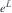
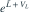
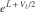
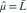
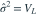
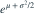

，两参数未知。令
，两参数未知。令  ，
， 。总体均值
。总体均值  的 MLE 为？
的 MLE 为？- A

- B

- C

- D

我已思考，展开答案与解析
正确答案：D
- 取对数后的正态样本给出

、
。 - 总体均值是

，由 MLE 不变性把两个估计代入即可。
易错提醒对数正态均值不同于其中位数 e^μ，也不必等于原样本均值。
JYSG · 432精选 · 册内复旦大学432·2025年·10(2)；PDF第41页（印刷页39）
原大题拆解